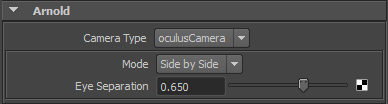

这是一个简化版摄影机，仅用于演示如何创建基本自定义摄影机。
有关此摄影机的更新和编译版本，请单击此处。
对于 Oculus 摄影机，我们将需要两个属性：
摄影机的最终代码将如下所示：
OculusCamera.cpp
#include <ai.h>
#include <ai_cameras.h>
#include <ai_nodes.h>
#include <cstring>
#include <ai_metadata.h>
AI_CAMERA_NODE_EXPORT_METHODS(OculusCameraMethods);
namespace
{
#define _mode (params[0].INT )
#define _eyeSeparation (params[1].FLT )
enum mode
{
M_SBS = 0,
M_OB,
M_LE,
M_RE
};
const char* mode_list[] =
{
"Side by Side",
"Over Under",
"Left Eye",
"Right Eye",
NULL
};
enum eye
{
E_RIGHT_EYE = 0,
E_LEFT_EYE
};
};
node_parameters
{
AiParameterEnum("mode", 0, mode_list);
AiParameterFlt("eyeSeparation", 0.65f);
}
node_initialize
{
AiCameraInitialize(node, NULL);
}
node_update
{
AiCameraUpdate(node, false);
}
node_finish
{
AiCameraDestroy(node);
}
camera_create_ray
{
const AtParamValue* params = AiNodeGetParams(node);
int mode = _mode;
float eyeSeparation = _eyeSeparation;
int currentEye = E_RIGHT_EYE;
float sx = input->sx;
float sy = input->sy;
if(mode == M_SBS)
{
if(input->sx < 0)
{
currentEye = E_LEFT_EYE;
sx = 2 * (input->sx + 0.5f);
}
else
{
currentEye = E_RIGHT_EYE;
sx = 2 * (input->sx - 0.5f);
}
}
else if (mode == M_OB)
{
if(input->sy < 0)
{
currentEye = E_LEFT_EYE;
sy = 2 * (input->sy + 0.5f);
}
else
{
currentEye = E_RIGHT_EYE;
sy = 2 * (input->sy - 0.5f);
}
}
else if (mode == M_LE)
{
currentEye = E_LEFT_EYE;
}
else if (mode == M_RE)
{
currentEye = E_RIGHT_EYE;
}
// Calculate spherical angles
float theta = AI_PI * sx;
float phi = AI_PIOVER2 * sy;
const float sin_theta = sinf(theta);
const float cos_theta = cosf(theta);
const float sin_phi = sinf(phi);
const float cos_phi = cosf(phi);
// normalized direction
output->dir.x = sin_theta * cos_phi;
output->dir.y = sin_phi;
output->dir.z = -cos_theta * cos_phi;
// derivative with respect to x
output->dDdx.x = cos_theta;
output->dDdx.y = 0.f;
output->dDdx.z = sin_theta;
output->dDdx *= input->dsx * AI_PI * cos_phi;
// derivative with respect to y
output->dDdy.x = -sin_theta * sin_phi;
output->dDdy.y = cos_phi;
output->dDdy.z = cos_theta * sin_phi;
output->dDdy *= input->dsy * AI_PIOVER2;
if(currentEye == E_LEFT_EYE)
{
output->origin.x = -0.5*eyeSeparation*cos_theta*cos_phi;
output->origin.z = -0.5*eyeSeparation*sin_theta*cos_phi;
}
else
{
output->origin.x = 0.5*eyeSeparation*cos_theta*cos_phi;
output->origin.z = 0.5*eyeSeparation*sin_theta*cos_phi;
}
}
node_loader
{
if (i > 0)
return false;
node->methods = OculusCameraMethods;
node->output_type = AI_TYPE_NONE;
node->name = "oculusCamera";
node->node_type = AI_NODE_CAMERA;
strcpy(node->version, AI_VERSION);
return true;
} 有关如何创建的详细信息，请单击此处。
此外，我们还将需要更新元数据文件和 Maya 模板。
我们将更新 oculusCamera.mtd 文件以提供有关两个新参数的信息：
oculusCamera.mtd
# oculusCamera 0x00070007
[node oculusCamera]
maya.name STRING "camera"
maya.id INT 0x00070007
maya.translator STRING "oculusCamera"
[attr mode]
maya.name STRING "aiMode"
default INT 0
[attr eyeSeparation]
maya.name STRING "aiEyeSeparation"
softmin FLOAT 0
softmax FLOAT 1
default FLOAT 0.65Maya 模板也应包含新参数：
aiOculusCameraTemplate.py
import mtoa.ui.ae.templates as templates
class aiOculusCameraTemplate(templates.AttributeTemplate):
def setup(self):
self.addControl("aiMode")
self.addControl("aiEyeSeparation")
templates.registerTranslatorUI(aiOculusCameraTemplate, "camera", "oculusCamera") 现在，您将可以在 Maya 中选择具有新参数的“oculusCamera”。
